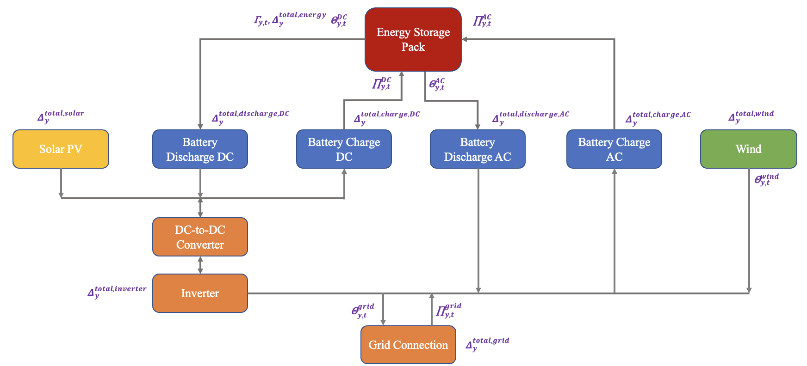

Co-located VRE-Storage Module
GenX.elec_vre_stor! — Method
elec_vre_stor!(EP::Model, inputs::Dict)Operational electrolyzer helper for VRE-STOR resources.
Creates electrolyzer power variable vP_ELEC, couples it into inverter AC balance (as load), and enforces:
- intertemporal ramp-up/ramp-down limits scaled by
eTotalCap_ELEC - minimum power (
min_power_elec * eTotalCap_ELEC) - maximum power (
vP_ELEC <= eTotalCap_ELEC)
Also builds eElecGenMaxE for module-level maximum-load tracking.
GenX.inverter_vre_stor! — Method
inverter_vre_stor!(EP::Model, inputs::Dict, setup::Dict)Operational inverter helper for VRE-STOR resources.
Initializes eInverterExport[y,t] and, in multistage runs, constrains existing inverter-capacity variables to input data:
\[vEXISTINGDCCAP_y = \overline{\Delta}^{existing,dc}_y\]
The inverter export limit is enforced in vre_stor! via eInverterExport[y,t] <= eTotalCap_DC[y].
GenX.investment_charge_vre_stor! — Method
investment_charge_vre_stor!(EP::Model, inputs::Dict, setup::Dict)This planning-stage helper creates asymmetric storage charge/discharge capacity build and retirement variables and associated total-capacity expressions for:
- DC discharge (
eTotalCapDischarge_DC) - DC charge (
eTotalCapCharge_DC) - AC discharge (
eTotalCapDischarge_AC) - AC charge (
eTotalCapCharge_AC)
For each direction $k$ in this set, the model uses:
\[\Delta^{\text{tot},k}_{y} = \overline{\Delta}^{k}_{y} + \Omega^{k}_{y} - \Delta^{\text{ret},k}_{y}\]
with subset-specific logic when a resource is only eligible for new build or only retirement.
The objective contribution for each direction follows:
\[\sum_y \left(\pi^{\text{INV},k}_{y}\,\Omega^{k}_{y} + \pi^{\text{FOM},k}_{y}\,\Delta^{\text{tot},k}_{y}\right)\]
with O&M scaling by 1/OPEXMULT in multi-stage mode, matching the implementation.
Capacity bounds enforced when provided:
\[\Delta^{\text{ret},k}_{y} \le \overline{\Delta}^{k}_{y}, \qquad \underline{\Delta}^{k}_{y} \le \Delta^{\text{tot},k}_{y} \le \overline{\Delta}^{k}_{y}\]
where existing-capacity equalities are also added for multi-stage mode.
GenX.investment_discharge_vre_stor! — Method
investment_discharge_vre_stor!(EP::Model, inputs::Dict, setup::Dict)Planning-stage VRE-STOR capacity formulation.
This function creates investment/retirement variables, total-capacity expressions, fixed and investment cost terms, and planning-side bounds for the VRE-STOR module components: grid connection, inverter, solar, wind, storage energy, and electrolyzer.
For each component $k \in \{\text{grid},\text{dc},\text{solar},\text{wind},\text{stor},\text{elec}\}$, the total installed capacity is represented with the same pattern:
\[\Delta^{\text{tot},k}_{y} = \overline{\Delta}^{k}_{y} + \Omega^{k}_{y} - \Delta^{\text{ret},k}_{y}\]
with the appropriate subset logic when a resource is only eligible for build or retirement.
The objective includes component-level investment and fixed O&M terms, e.g.
\[\sum_y \left(\pi^{\text{INV},k}_{y}\,\Omega^{k}_{y} + \pi^{\text{FOM},k}_{y}\,\Delta^{\text{tot},k}_{y}\right)\]
(scaled by 1/OPEXMULT in multi-stage mode for O&M terms as implemented).
The function also enforces:
\[\Delta^{\text{ret},k}_{y} \le \overline{\Delta}^{k}_{y}, \qquad \underline{\Delta}^{k}_{y} \le \Delta^{\text{tot},k}_{y} \le \overline{\Delta}^{k}_{y}\]
whenever min/max bounds are provided in inputs, plus inverter-ratio constraints for solar and wind.
Finally, it adds VRE-STOR contributions to minimum/maximum capacity requirement policy expressions and, when Benders planning is enabled with representative periods and LDS resources, activates lds_vre_stor_planning!().
GenX.lds_vre_stor! — Method
lds_vre_stor!(EP::Model, inputs::Dict)Non-Benders long-duration-storage linkage for VRE-STOR resources.
Creates inter-period SOC variables (vSOCw_VRE_STOR, vdSOC_VRE_STOR) and enforces representative-period start SOC consistency, cross-period recursion, and upper bounds by installed storage energy capacity.
GenX.lds_vre_stor_capres! — Method
lds_vre_stor_capres!(EP::Model, inputs::Dict)Non-Benders LDS CRM linkage for VRE-STOR resources.
Creates inter-period reserve-SOC variables and constraints linking reserve SOC across representative periods, plus lower-bound coupling with vSOCw_VRE_STOR.
GenX.lds_vre_stor_capres_planning! — Method
lds_vre_stor_capres_planning!(EP::Model, inputs::Dict)Planning-side LDS CRM linkage for VRE-STOR resources.
Creates reserve-SOC carryover variables and enforces inter-period recursion and lower-bound coupling to planning SOC:
\[vCAPCONTRSTOR\_VSOCw_{y,r+1} = vCAPCONTRSTOR\_VSOCw_{y,r} + vCAPCONTRSTOR\_VdSOC_{y,f(r)}\]
\[vSOCw\_VRE\_STOR_{y,r} \ge vCAPCONTRSTOR\_VSOCw\_VRE\_STOR_{y,r}\]
GenX.lds_vre_stor_capres_subperiod! — Method
lds_vre_stor_capres_subperiod!(EP::Model, inputs::Dict)Benders subproblem LDS CRM linkage for VRE-STOR resources.
Builds reserve-SOC start/end linking constraints for the active subperiod and includes bounded slack variables used to preserve decomposition feasibility.
GenX.lds_vre_stor_planning! — Method
lds_vre_stor_planning!(EP::Model, inputs::Dict)Planning-side LDS helper for VRE-STOR resources.
Creates inter-period SOC carryover variables and enforces recursion across modeled periods:
\[vSOCw_{y,r+1} = vSOCw_{y,r} + vdSOC_{y,f(r)}\]
with an upper bound by installed storage-energy capacity eTotalCap_STOR.
GenX.lds_vre_stor_subperiod! — Method
lds_vre_stor_subperiod!(EP::Model, inputs::Dict)Benders subproblem LDS helper for VRE-STOR resources.
Builds subproblem-period SOC linking constraints between beginning and end of the representative period and introduces bounded slack variables to preserve feasibility in decomposition iterations.
GenX.solar_vre_stor! — Method
solar_vre_stor!(EP::Model, inputs::Dict, setup::Dict)Operational solar-PV helper for VRE-STOR resources.
Creates dispatch variable vP_SOLAR, adds variable O&M cost, and contributes solar output to inverter AC balance/export expressions.
Defines eSolarGenMaxS, later bounded in vre_stor! by:
\[eSolarGenMaxS_{y,t} \le pP\_Max\_Solar_{y,t}\,eTotalCap\_SOLAR_y\]
GenX.stor_vre_stor! — Method
stor_vre_stor!(EP::Model, inputs::Dict, setup::Dict)Operational storage helper for VRE-STOR resources.
Creates storage SOC and charge/discharge variables (DC/AC), adds variable O&M costs, and builds SOC balance expressions for interior and start-of-subperiod timesteps.
SOC recursion is of the form:
\[vS_{y,t} = vS_{y,t-1}(1-\eta^{loss}_y) - \frac{P^{dc,dis}_{y,t}}{\eta^{dc,dis}_y} - \frac{P^{ac,dis}_{y,t}}{\eta^{ac,dis}_y} + \eta^{dc,cha}_y P^{dc,cha}_{y,t} + \eta^{ac,cha}_y P^{ac,cha}_{y,t}\]
with periodic wrap for start timesteps, upper bounds by eTotalCap_STOR, and power-rate expressions used by symmetric/asymmetric storage limits in vre_stor!.
If representative periods and LDS are active, dispatches to lds_vre_stor! or lds_vre_stor_subperiod! depending on setup["Benders"].
GenX.vre_stor! — Method
vre_stor!(EP::Model, inputs::Dict, setup::Dict)This module enables the modeling of 1) co-located VRE and energy storage technologies, and 2) optimized interconnection sizing for VREs. Utility-scale solar PV and/or wind VRE technologies can be modeled at the same site with or without storage technologies. Storage resources can be charged/discharged behind the meter through the inverter (DC) and through AC charging/discharging capabilities. Each resource can be configured to have any combination of the following components: solar PV, wind, DC discharging/charging storage, and AC discharging/charging storage resources. For storage resources, both long duration energy storage and short-duration energy storage can be modeled, via asymmetric or symmetric charging and discharging options. Each resource connects to the grid via a grid connection component, which is the only required decision variable that each resource must have. If the configured resource has either solar PV and/or DC discharging/charging storage capabilities, an inverter decision variable is also created. The full module with the decision variables and interactions can be found below.

Figure. Configurable Co-located VRE and Storage Module Interactions and Decision VariablesThis module is split such that functions are called for each configurable component of a co-located resource: inverter_vre_stor(), solar_vre_stor!(), wind_vre_stor!(), stor_vre_stor!(), lds_vre_stor!(), and investment_charge_vre_stor!(). The function vre_stor!() specifically ensures that all necessary functions are called to activate the appropriate constraints, creates constraints that apply to multiple components (i.e. inverter and grid connection balances and maximums), and activates all of the policies that have been created (minimum capacity requirements, maximum capacity requirements, capacity reserve margins, operating reserves, and energy share requirements can all be turned on for this module). Note that not all of these variables are indexed by each co-located VRE and storage resource (for example, some co-located resources may only have a solar PV component and battery technology or just a wind component). Thus, the function vre_stor!() ensures indexing issues do not arise across the various potential configurations of co-located VRE and storage module but showcases all constraints as if each decision variable (that may be only applicable to certain components) is indexed by each $y \in \mathcal{VS}$ for readability.
The first constraint is created with the function vre_stor!() and exists for all resources, regardless of the VRE and storage components that each resource contains and regardless of the policies invoked for the module. This constraint represents the energy balance, ensuring net DC power (discharge of battery, PV generation, and charge of battery) and net AC power (discharge of battery, wind generation, and charge of battery) are equal to the technology's total discharging to and charging from the grid:
\[\begin{aligned} & \Theta_{y,z,t} - \Pi_{y,z,t} = \Theta_{y,z,t}^{wind} + \Theta_{y,z,t}^{ac} - \Pi_{y,z,t}^{ac} + \eta^{inverter}_{y,z} \times (\Theta_{y,z,t}^{pv} + \Theta_{y,z,t}^{dc}) - \frac{\Pi^{dc}_{y,z,t}}{\eta^{inverter}_{y,z}} \\ & \forall y \in \mathcal{VS}, \forall z \in \mathcal{Z}, \forall t \in \mathcal{T} \end{aligned}\]
The second constraint is also created with the function vre_stor!() and exists for all resources, regardless of the VRE and storage components that each resource contains. However, this constraint changes when either or both capacity reserve margins and operating reserves are activated. The following constraint enforces that the maximum grid exports and imports must be less than the grid connection capacity (without any policies):
\[\begin{aligned} & \Theta_{y,z,t} + \Pi_{y,z,t} \leq \Delta^{total}_{y,z} & \quad \forall y \in \mathcal{VS}, \forall z \in \mathcal{Z}, \forall t \in \mathcal{T} \end{aligned}\]
The second constraint with only capacity reserve margins activated is:
\[\begin{aligned} & \Theta_{y,z,t} + \Pi_{y,z,t} + \Theta^{CRM,ac}_{y,z,t} + \Pi^{CRM,ac}_{y,z,t} + \eta^{inverter}_{y,z} \times \Theta^{CRM,dc}_{y,z,t} + \frac{\Pi^{CRM,dc}_{y,z,t}}{\eta^{inverter}_{y,z}} \\ & \leq \Delta^{total}_{y,z} \quad \forall y \in \mathcal{VS}, \forall z \in \mathcal{Z}, \forall t \in \mathcal{T} \end{aligned}\]
The second constraint with only operating reserves activated is:
\[\begin{aligned} & \Theta_{y,z,t} + \Pi_{y,z,t} + f^{ac,dis}_{y,z,t} + r^{ac,dis}_{y,z,t} + f^{ac,cha}_{y,z,t} + f^{wind}_{y,z,t} + r^{wind}_{y,z,t} \\ & + \eta^{inverter}_{y,z} \times (f^{pv}_{y,z,t} + r^{pv}_{y,z,t} + f^{dc,dis}_{y,z,t} + r^{dc,dis}_{y,z,t}) + \frac{f^{dc,cha}_{y,z,t}}{\eta^{inverter}_{y,z}} \leq \Delta^{total}_{y,z} \quad \forall y \in \mathcal{VS}, \forall z \in \mathcal{Z}, \forall t \in \mathcal{T} \end{aligned}\]
The second constraint with both capacity reserve margins and operating reserves activated is:
\[\begin{aligned} & \Theta_{y,z,t} + \Pi_{y,z,t} + \Theta^{CRM,ac}_{y,z,t} + \Pi^{CRM,ac}_{y,z,t} + f^{ac,dis}_{y,z,t} + r^{ac,dis}_{y,z,t} + f^{ac,cha}_{y,z,t} + f^{wind}_{y,z,t} + r^{wind}_{y,z,t} \\ & + \eta^{inverter}_{y,z} \times (\Theta^{CRM,dc}_{y,z,t} + f^{pv}_{y,z,t} + r^{pv}_{y,z,t} + f^{dc,dis}_{y,z,t} + r^{dc,dis}_{y,z,t}) + \frac{\Pi^{CRM,dc}_{y,z,t} + f^{dc,cha}_{y,z,t}}{\eta^{inverter}_{y,z}} \\ & \leq \Delta^{total}_{y,z} \quad \forall y \in \mathcal{VS}, \forall z \in \mathcal{Z}, \forall t \in \mathcal{T} \end{aligned}\]
GenX.vre_stor_capres! — Method
vre_stor_capres!(EP::Model, inputs::Dict, setup::Dict)Capacity-reserve-margin coupling for VRE-STOR operations.
Creates virtual CRM charge/discharge variables (vCAPRES_*) and reserve SOC (vCAPRES_VS_VRE_STOR), enforces virtual SOC dynamics, and couples reserve SOC as a lower bound on operational SOC.
Adds CRM terms into module expressions (eGridExport, eInverterExport, eSolarGenMaxS, eWindGenMaxW, storage rate expressions) and contributes CRM capacity terms to eCapResMarBalance.
When StorageVirtualDischarge == 1, it adds virtual charge/discharge penalty terms to eObj. For LDS resources, dispatches to lds_vre_stor_capres_subperiod! in Benders mode and lds_vre_stor_capres! otherwise.
GenX.vre_stor_operational_reserves! — Method
vre_stor_operational_reserves!(EP::Model, inputs::Dict, setup::Dict)Operational reserve coupling for VRE-STOR resources.
Creates technology-channel reserve variables for solar, wind, and storage charge/ discharge modes, links them to resource-level vREG/vRSV, and enforces reserve share limits against installed grid capacity:
\[vREG_{y,t} \le reg\_max_y\,eTotalCap_y, \qquad vRSV_{y,t} \le rsv\_max_y\,eTotalCap_y\]
Adds reserve terms into module expressions and enforces storage energy-feasibility constraints (charge headroom and discharge energy availability), including CRM virtual terms when CRM is enabled.
GenX.wind_vre_stor! — Method
wind_vre_stor!(EP::Model, inputs::Dict, setup::Dict)Operational wind helper for VRE-STOR resources.
Creates dispatch variable vP_WIND, adds variable O&M cost, and contributes wind output to module AC-balance/export expressions.
Defines eWindGenMaxW, later bounded in vre_stor! by:
\[eWindGenMaxW_{y,t} \le pP\_Max\_Wind_{y,t}\,eTotalCap\_WIND_y\]
GenX.write_vre_stor — Method
write_vre_stor(path::AbstractString, inputs::Dict, setup::Dict, EP::Model)Function for writing the vre-storage specific files.
GenX.write_vre_stor_capacity — Method
write_vre_stor_capacity(path::AbstractString, inputs::Dict, setup::Dict, EP::Model)Function for writing the vre-storage capacities.
GenX.write_vre_stor_charge — Method
write_vre_stor_charge(path::AbstractString, inputs::Dict, setup::Dict, EP::Model)Function for writing the vre-storage charging decision variables/expressions.
GenX.write_vre_stor_discharge — Method
write_vre_stor_discharge(path::AbstractString, inputs::Dict, setup::Dict, EP::Model)Function for writing the vre-storage discharging decision variables/expressions.